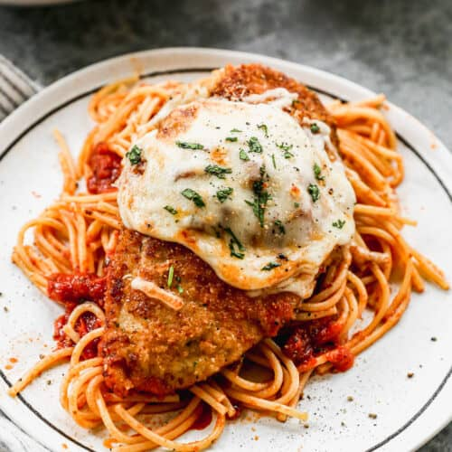

Chicken Parmesan

The Best Healthy Cheat Meal
Chick Parm is the best thing that has ever been created
in my opinion. Your gaining everything you need including as
a runner this is a go to because you are gaining carbs protein
and the most important thing of them all... Flavor!
Ingredients
- Chicken Breast
- Noodles
- Tomota sauce
- Italain Seasoning
- Mozzarella
- Eggs
- Bread Crumbs
- Preheat oven to 430. Lightly Grease oven Tray
- Crack your eggs and place breadcrumbs on seperate bowl
- Clean you chicken, then pat dry and place into eggs and breadcrumb
bowl.
- Place chicken in into medium heat pan and cook till golden brown
- Place noodles into pot with hot water once soft it is good to go.
- Place chicken into baking tray and ocver with mozzarella cheese
- Place baking tray into oven for 10mins and serve food when done.